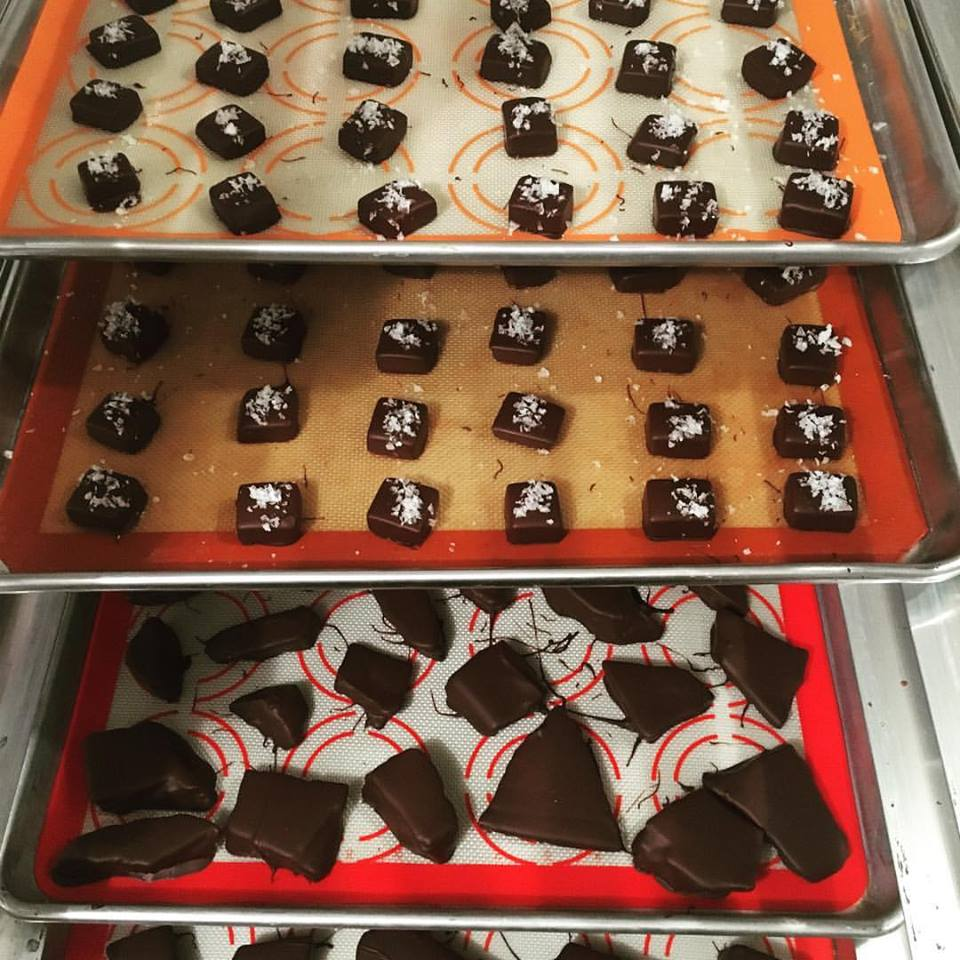

How it Began
I am a pharmacist by trade, a mom by choice, and a candy maker by passion. I am the last of 11 kids and have grown up making candy during the holidays. I learned candy making and baking when I was very young. My mom shared her talents and craft with me. For that, I am so grateful. Every year, it’s just not Christmas without family favorites decorating the table. I have taken 50-year old family recipes, added several more and can’t wait for you to try these confections! Thank you for being a part of my adventure! Jenny Carlson, Owner, Confectioner The Candy Apothecary
